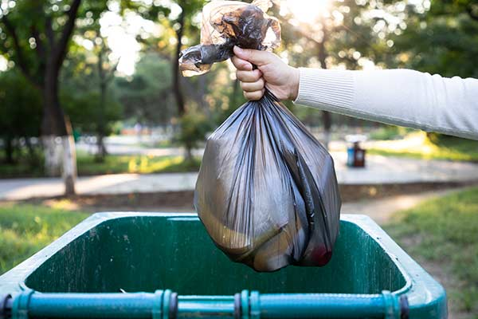

About Us
The Agency was created in 1994 via a 28E agreement between the City of Cedar Rapids and Linn County.

Who We Are
The Agency operates two locations in Linn County, Iowa.
The landfill and Resource Recovery building are located at 1954 County Home Road, Marion, Iowa. The compost/yard waste facility is located at 2250 A Street SW, Cedar Rapids, Iowa. The Agency is guided by a nine-member board of directors.

What We Stand For
Agency Mission Statement
Ensuring the health, safety and welfare of the community through cost-effective and environmentally sound practices for management of solid waste generated in Linn County.


Electronic Waste Disposal
E-Waste is a waste stream that is quickly growing.
The outdated and obsolete electronics that you no longer want are electronic waste or “E-waste,” a waste stream that's quickly growing.
Many electronics contain toxic materials such as lead, lithium, cadmium and mercury. Reusing and recycling electronics keeps these toxic materials out of our landfills and recovers valuable resources.
Electronic Waste Disposal
What happens next?
After you drop off your E-waste, it is taken to an electronics processor and dismantled or "de-manufactured" into core components that are used to manufacture new recycled goods.
These components include glass, plastic and circuit boards. The circuit boards themselves contain reusable metals such as copper, gold and silver.


What Else To Know?
Please be aware that fees paid for landfill disposal subsidize the cost of recycling for many items. We do our best to keep prices and rates low but, generally, recycling isn’t free.

Small Items
Smaller recyclables, including electronics, batteries and hazardous materials, are collected inside the Resource Recovery Building

Large Items
Large, bulky items are generally managed outside. Trailer loads will be directed to th eworking face of the landfill.

Fees
We do our best to keep prices and rates low but, generally, recycling isn’t free.